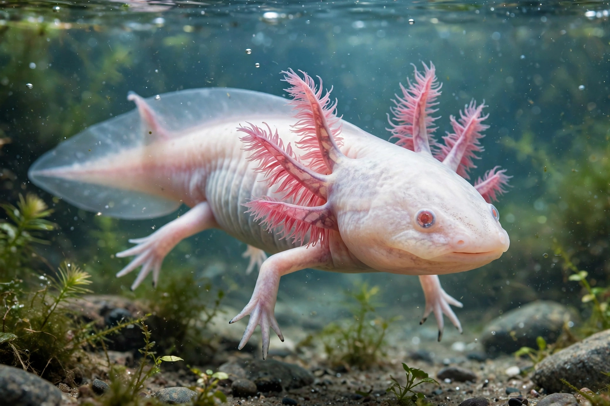

| Axolotl | |
|---|---|
 | |
| Scientific name | Ambystoma mexicanum |
| Family | Ambystomatidae |
| Native to | Lake Xochimilco, Mexico City |
| Conservation status | Critically Endangered (IUCN) |
The axolotl (Ambystoma mexicanum) is a paedomorphic salamander closely related to the tiger salamander. Unlike most amphibians it reaches adulthood without undergoing metamorphosis: adults retain the feathery external gills, caudal fin and fully aquatic lifestyle of the larva — a textbook case of paedomorphism (neoteny). The species takes its name from Xolotl, the Aztec god of fire and lightning who, in myth, transformed himself into an axolotl to escape sacrifice.
Wild axolotls survive only in the canal system of Lake Xochimilco, the remnant of the great lakes of the Valley of Mexico. Urbanisation, water pollution and introduced tilapia and carp have crashed the wild population — surveys fell from about 6,000 animals per square kilometre in 1998 to a few dozen or fewer per square kilometre in the 2010s — and the IUCN lists the species as critically endangered. Refuge projects among the chinampa gardens aim to restore predator-free habitat.
Axolotls are bred in huge numbers in captivity for research and the pet trade. They regenerate entire limbs, the spinal cord, parts of the heart and brain without scarring, making them a major model in regenerative biology. Their genome, at about 32 billion base pairs, is the largest animal genome sequenced (2018). Laboratory stocks descend largely from animals collected in the 1860s and carry tiger-salamander ancestry from an albino cross made in the 1960s.